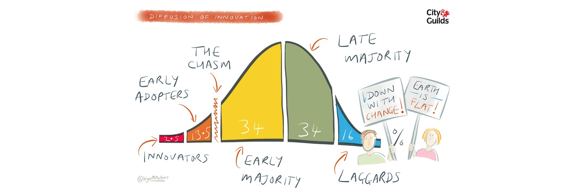

Being in the final year can be stressful, you have to look out for a job. Eventually, that's what most people settle for. I'm too in my final year and unlike everyone else in my situation, I'm not thinking about getting a job. Even if I would I'm sure it'll be related to research. And I usually get asked a lot about why do I want to pursue research, why not go for a job. And in my mind, I'm like why not, but I don't think it is that simple. So let me explain.
For starting off, I love my research more than I thought I would in my first year at college. Because like everyone else I thought it to be boring and without having any practical use case. ''' I remember telling one of my friend working on her thesis, "how boring it would to work on thesis". '''
But that is definitely not the case. After being in her situation, I don't think it as boring as it sounds. Also, I get to work on really interesting problems and there is no way that can be boring. And usually they have high impact value too plus, I get to choose the kind of problems that I want to work on. Doesn't it sound like a perfect thing? Don't get me wrong, I know nothing is perfect and YES finances are an important part of life too and I get it. And that is one of the reasons why I can afford to do it now. I can live with bare minimum expenses right now and still function on 5-hour sleep. I know in the end I have to get a job. But I don't think it's the right time.
Another question that comes in mind is that:
It might seem a tempting option and a more practical one too. But for anyone who is familiar with Deep Learning, knows that AI is finally having its moment. People are finally starting to understand how it works and because of that, there are several unsolved problems coming up. And for someone who has been working on them, it is too big of an opportunity to miss.
For anyone not familiar with Deep Learning, it similar to the famous, Diffusion of innovations theory and currently we are close to the innovators and the early adopters. Which is a great time situation to be in.

There is a risk too, I admit that and it's a typical choice anyone would take. But If I have to take the risk. It has to be now, there is too little to lose and soo much to gain.